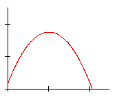
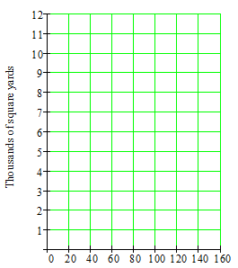
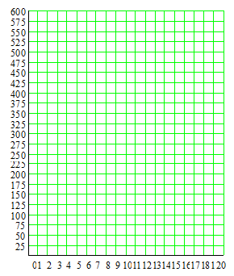

In this Lesson we find the maximum or minimum value for a quadratic model and use the vertex form to find the equation of a parabola. We also put a quadratic equation into vertex form by completing the square.
Section 4.2 The Vertex
Activity 4.2.1. Finding the Vertex.
- How do you know that the graph of \(y=(x-2)^2-6\) is a parabola?
- Does the parabola open up or down? Why?
- What is the smallest \(y\)-value on the graph of \(y=(x-2)^2-6\text{?}\) (Hint: What is the smallest value that \((x-2)^2\) can have?)
-
Which \(x\)-value gives us the smallest \(y\)-value? Why?
- Graph the equation in the standard window and verify your answers.
- Find the vertex of the graph of \(y=3(x-2)^2-6\text{.}\)
- Write the equation above in standard form.
- Find an equation for a parabola whose vertex is \((4,-7)\text{.}\)
- Sketch your parabola on the grid.

- Find an equation for another parabola whose vertex is \((4,-7)\) if one point on the graph is \((2,9)\text{.}\)
- Sketch that parabola on the same grid.
Activity 4.2.2. Vertex Form.
The batter in a softball game hits the ball when it is 4 feet above the ground. The ball reaches the greatest height, 35 feet, directly above the head of the left-fielder, who is 200 feet from home plate.
- The path of the ball is shown at right. Label the \(y\)-intercept and the vertex with their coordinates.

- Write an equation for the height of the ball in terms of the horizontal distance it has traveled.
- Find the height of the ball when it reaches the left field wall, which is 375 feet from home plate. If the wall is 10 feet tall, did the batter hit a home run (did the ball go over the wall)?
Activity 4.2.3. Maximum or Minimum value.
A farmer plans to fence a rectangular grazing area along a river using 300 yards of fence.
- Draw a sketch illustrating the grazing area, and label its length and width.
- Let \(w\) stand for the width of the rectangle, and write an expression for the length \(l\) in terms of the width.
- Write an equation for the area \(A\) of the grazing land in terms of \(w\text{.}\)
-
Graph the equation.

- Use algebra to answer the questions:
- What is the largest area the farmer can enclose?
- What are the dimensions of the largest area?
Activity 4.2.4. Revenue.
The local theater group sold tickets to its opening night performance for $5 and drew an audience of 100 people. The next night they reduced the ticket price by $0.25 and 10 more people attended; that is, 110 people bought tickets at $4.75 apiece. In fact, for each $0.25 reduction in ticket price, 10 additional tickets can be sold.
-
Complete the table.
Price Reductions Price of Ticket Tickets Sold Total Revenue 0 5.00 100 500 1 4.75 110 522.50 2 \(\hphantom{000}\) \(\hphantom{000}\) \(\hphantom{000}\) 3 \(\hphantom{000}\) \(\hphantom{000}\) \(\hphantom{000}\) 5 \(\hphantom{000}\) \(\hphantom{000}\) \(\hphantom{000}\) 8 \(\hphantom{000}\) \(\hphantom{000}\) \(\hphantom{000}\) 10 \(\hphantom{000}\) \(\hphantom{000}\) \(\hphantom{000}\) -
Let \(x\) represent the number of price reductions, as in the first column of the table. Write algebraic expressions in terms of for:The Price of a Ticket after price reductions:The Number of Tickets Sold at that price:The Total Revenue from ticket sales:
-
Use the Table feature of your technology tool to verify that your algebraic expressions agree with your table from part (a).\(Y_1 = \) the price of a ticket\(Y_2 = \) the number of tickets sold\(Y_3 = \) the total revenue
-
Graph your equation for total revenue in terms of \(x\text{.}\) Sketch the graph on the grid.

-
What is the maximum revenue possible from ticket sales?What is the value of \(x\) at that revenue?
-
Use your formulas for \(Y_1\) and \(Y_2\) to answer the questions:What price should the theater group charge for a ticket to generate the maximum revenue?How many tickets will they sell at that price?
Subsection 4.2.1 Check Your Understanding
- The height of a golf ball in meters is given by \(~h=-4.9t^2+20t \text{.}\) Explain how to find out when the ball hits the ground. Explain how to find the greatest height the ball reaches.
- Explain why you need another point besides the vertex to find the equation of a parabola.
- Explain why revenue does not increase indefinitely as you increase price.
- What is the smallest value that \(y\) can have if \(~y=2(x-3)2+6\) ? What value of \(x\) produces that smallest \(y\)-value?
Subsection 4.2.2 Wrap-Up
In this Lesson, we worked on the following skills and goals related to quadratic models:
- Find the vertex of a parabola
- Find the maximum or minimum value of a quadratic model
- Write a quadratic equation in vertex form by completing the square
- Find an equation for a parabola given the vertex and one other point
- Write a quadratic model for revenue
Subsection 4.2.3 Questions for Writing or Discussion
- Explain how to find the coordinates of the vertex of a parabola.
- When is the vertex form for a quadratic equation useful?
- Explain why revenue will probably not increase indefinitely as price increases.
- Why do we need to know a second point besides the vertex to find the equation of a parabola?
Concept Questions.
-
What is the \(x\)-coordinate of the vertex of the parabola \(~y=4(x-2)(x+8)\text{?}\)
- 4
- \(\displaystyle -16\)
- 6
- 3
-
What is the smallest -value on the graph of \(~y=4(x-6)^2 + 12\text{?}\)
- 6
- 4
- 12
- We can’t tell without graphing.
-
The height of golf ball in meters is given by \(h=-4.9t^2+20t\text{.}\) How can you find out when the golf ball hits the ground?
- Plug in \(t=0\text{.}\)
- Solve for \(t\) when \(h=0\text{.}\)
- Find the vertex of the graph.
- Calculate the discriminant.
-
What does the vertex of the graph tell us about the golf ball in question 3?
- How long the golf ball is in the air
- The starting height of the golf ball
- When the golf ball reaches its maximum height
- The speed of the golf ball